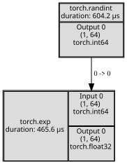
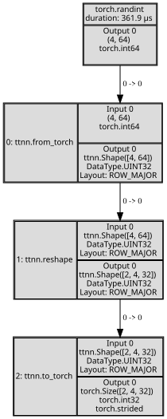
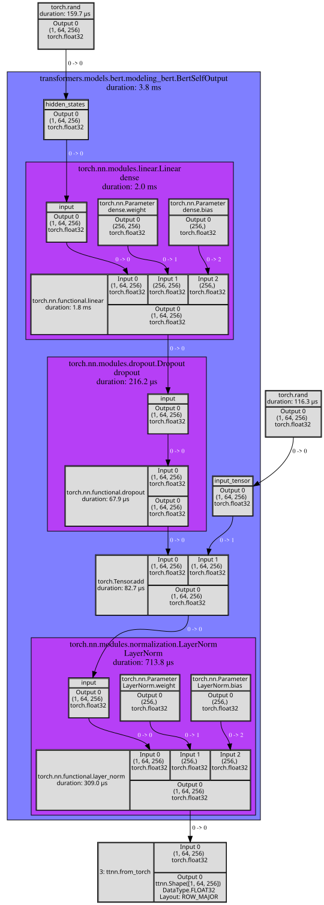
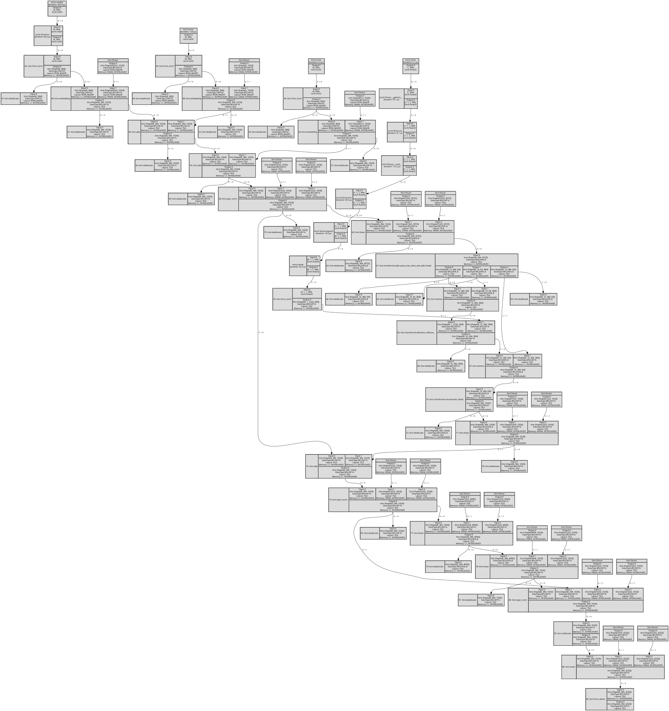

Tracing ttnn operations and torch modules/functions
[1]:
import os
os.environ["TTNN_CONFIG_OVERRIDES"] = "{\"enable_fast_runtime_mode\": false}"
[2]:
import torch
import transformers
import ttnn
from ttnn.tracer import trace, visualize
2024-07-11 18:17:47.183 | DEBUG | ttnn:<module>:133 - Loading ttnn configuration overrides from environment variable TTNN_CONFIG_OVERRIDES
2024-07-11 18:17:47.184 | DEBUG | ttnn:<module>:136 - Initial ttnn.CONFIG:
{'cache_path': PosixPath('/home/ubuntu/.cache/ttnn'),
'comparison_mode_pcc': 0.9999,
'enable_comparison_mode': False,
'enable_detailed_buffer_report': False,
'enable_detailed_tensor_report': False,
'enable_fast_runtime_mode': False,
'enable_graph_report': False,
'enable_logging': False,
'enable_model_cache': False,
'model_cache_path': PosixPath('/home/ubuntu/.cache/ttnn/models'),
'report_name': None,
'root_report_path': PosixPath('generated/ttnn/reports'),
'throw_exception_on_fallback': False,
'tmp_dir': PosixPath('/tmp/ttnn')}
2024-07-11 18:17:47.354 | WARNING | ttnn.decorators:operation_decorator:758 - Should ttnn.logical_xor be migrated to C++?
2024-07-11 18:17:47.355 | WARNING | ttnn.decorators:operation_decorator:758 - Should ttnn.xlogy be migrated to C++?
2024-07-11 18:17:47.356 | WARNING | ttnn.decorators:operation_decorator:758 - Should ttnn.maximum be migrated to C++?
2024-07-11 18:17:47.356 | WARNING | ttnn.decorators:operation_decorator:758 - Should ttnn.minimum be migrated to C++?
2024-07-11 18:17:47.357 | WARNING | ttnn.decorators:operation_decorator:758 - Should ttnn.atan2 be migrated to C++?
2024-07-11 18:17:47.358 | WARNING | ttnn.decorators:operation_decorator:758 - Should ttnn.hypot be migrated to C++?
2024-07-11 18:17:47.358 | WARNING | ttnn.decorators:operation_decorator:758 - Should ttnn.nextafter be migrated to C++?
2024-07-11 18:17:47.359 | WARNING | ttnn.decorators:operation_decorator:758 - Should ttnn.polyval be migrated to C++?
2024-07-11 18:17:47.359 | WARNING | ttnn.decorators:operation_decorator:758 - Should ttnn.isclose be migrated to C++?
2024-07-11 18:17:47.360 | WARNING | ttnn.decorators:operation_decorator:758 - Should ttnn.all_gather be migrated to C++?
2024-07-11 18:17:47.362 | WARNING | ttnn.decorators:operation_decorator:758 - Should ttnn.pearson_correlation_coefficient be migrated to C++?
2024-07-11 18:17:47.366 | WARNING | ttnn.decorators:operation_decorator:758 - Should ttnn.conv2d be migrated to C++?
2024-07-11 18:17:47.367 | WARNING | ttnn.decorators:operation_decorator:758 - Should ttnn.reshape be migrated to C++?
2024-07-11 18:17:47.368 | WARNING | ttnn.decorators:operation_decorator:758 - Should ttnn.unsqueeze_to_4D be migrated to C++?
2024-07-11 18:17:47.369 | WARNING | ttnn.decorators:operation_decorator:758 - Should ttnn.squeeze be migrated to C++?
2024-07-11 18:17:47.369 | WARNING | ttnn.decorators:operation_decorator:758 - Should ttnn.from_torch be migrated to C++?
2024-07-11 18:17:47.370 | WARNING | ttnn.decorators:operation_decorator:758 - Should ttnn.to_torch be migrated to C++?
2024-07-11 18:17:47.370 | WARNING | ttnn.decorators:operation_decorator:758 - Should ttnn.to_device be migrated to C++?
2024-07-11 18:17:47.371 | WARNING | ttnn.decorators:operation_decorator:758 - Should ttnn.from_device be migrated to C++?
2024-07-11 18:17:47.371 | WARNING | ttnn.decorators:operation_decorator:758 - Should ttnn.allocate_tensor_on_device be migrated to C++?
2024-07-11 18:17:47.372 | WARNING | ttnn.decorators:operation_decorator:758 - Should ttnn.copy_host_to_device_tensor be migrated to C++?
2024-07-11 18:17:47.373 | WARNING | ttnn.decorators:operation_decorator:758 - Should ttnn.deallocate be migrated to C++?
2024-07-11 18:17:47.373 | WARNING | ttnn.decorators:operation_decorator:758 - Should ttnn.clone be migrated to C++?
2024-07-11 18:17:47.374 | WARNING | ttnn.decorators:operation_decorator:758 - Should ttnn.reallocate be migrated to C++?
2024-07-11 18:17:47.374 | WARNING | ttnn.decorators:operation_decorator:758 - Should ttnn.load_tensor be migrated to C++?
2024-07-11 18:17:47.375 | WARNING | ttnn.decorators:operation_decorator:758 - Should ttnn.dump_tensor be migrated to C++?
2024-07-11 18:17:47.375 | WARNING | ttnn.decorators:operation_decorator:758 - Should ttnn.as_tensor be migrated to C++?
2024-07-11 18:17:47.378 | WARNING | ttnn.decorators:operation_decorator:758 - Should ttnn.arange be migrated to C++?
2024-07-11 18:17:47.379 | WARNING | ttnn.decorators:operation_decorator:758 - Should ttnn.mse_loss be migrated to C++?
2024-07-11 18:17:47.380 | WARNING | ttnn.decorators:operation_decorator:758 - Should ttnn.l1_loss be migrated to C++?
2024-07-11 18:17:47.381 | WARNING | ttnn.decorators:operation_decorator:758 - Should ttnn.matmul be migrated to C++?
2024-07-11 18:17:47.381 | WARNING | ttnn.decorators:operation_decorator:758 - Should ttnn.linear be migrated to C++?
2024-07-11 18:17:47.383 | WARNING | ttnn.decorators:operation_decorator:758 - Should ttnn.mac be migrated to C++?
2024-07-11 18:17:47.384 | WARNING | ttnn.decorators:operation_decorator:758 - Should ttnn.addcmul be migrated to C++?
2024-07-11 18:17:47.384 | WARNING | ttnn.decorators:operation_decorator:758 - Should ttnn.addcdiv be migrated to C++?
2024-07-11 18:17:47.385 | WARNING | ttnn.decorators:operation_decorator:758 - Should ttnn.lerp be migrated to C++?
2024-07-11 18:17:47.390 | WARNING | ttnn.decorators:operation_decorator:758 - Should ttnn.logit be migrated to C++?
2024-07-11 18:17:47.390 | WARNING | ttnn.decorators:operation_decorator:758 - Should ttnn.polygamma be migrated to C++?
2024-07-11 18:17:47.391 | WARNING | ttnn.decorators:operation_decorator:758 - Should ttnn.hardshrink be migrated to C++?
2024-07-11 18:17:47.392 | WARNING | ttnn.decorators:operation_decorator:758 - Should ttnn.celu be migrated to C++?
2024-07-11 18:17:47.392 | WARNING | ttnn.decorators:operation_decorator:758 - Should ttnn.softshrink be migrated to C++?
2024-07-11 18:17:47.393 | WARNING | ttnn.decorators:operation_decorator:758 - Should ttnn.clip be migrated to C++?
2024-07-11 18:17:47.393 | WARNING | ttnn.decorators:operation_decorator:758 - Should ttnn.threshold be migrated to C++?
2024-07-11 18:17:47.394 | WARNING | ttnn.decorators:operation_decorator:758 - Should ttnn.glu be migrated to C++?
2024-07-11 18:17:47.394 | WARNING | ttnn.decorators:operation_decorator:758 - Should ttnn.reglu be migrated to C++?
2024-07-11 18:17:47.395 | WARNING | ttnn.decorators:operation_decorator:758 - Should ttnn.swiglu be migrated to C++?
2024-07-11 18:17:47.396 | WARNING | ttnn.decorators:operation_decorator:758 - Should ttnn.geglu be migrated to C++?
2024-07-11 18:17:47.397 | WARNING | ttnn.decorators:operation_decorator:758 - Should ttnn.matmul be migrated to C++?
2024-07-11 18:17:47.398 | WARNING | ttnn.decorators:operation_decorator:758 - Should ttnn.linear be migrated to C++?
2024-07-11 18:17:47.399 | WARNING | ttnn.decorators:operation_decorator:758 - Should ttnn.conv2d be migrated to C++?
[3]:
transformers.logging.set_verbosity_error()
Trace torch functions
[4]:
with trace():
tensor = torch.randint(0, 100, (1, 64))
tensor = torch.exp(tensor)
visualize(tensor)
2024-07-11 18:17:47.412 | DEBUG | ttnn.tracer:visualize:442 - Dumping graph of the model to None
[4]:

Trace torch functions and ttnn operations
[5]:
with trace():
tensor = torch.randint(0, 100, (4, 64))
tensor = ttnn.from_torch(tensor)
tensor = ttnn.reshape(tensor, (2, 4, 32))
tensor = ttnn.to_torch(tensor)
visualize(tensor)
2024-07-11 18:17:47.447 | DEBUG | ttnn.tracer:visualize:442 - Dumping graph of the model to None
[5]:

Trace torch functions, torch modules and ttnn operations
[6]:
model_name = "google/bert_uncased_L-4_H-256_A-4"
config = transformers.BertConfig.from_pretrained(model_name)
model = transformers.models.bert.modeling_bert.BertSelfOutput(config).eval()
with trace():
hidden_states = torch.rand((1, 64, config.hidden_size))
input_tensor = torch.rand((1, 64, config.hidden_size))
hidden_states = model(hidden_states, input_tensor)
output = ttnn.from_torch(hidden_states)
visualize(output)
/home/ubuntu/tt-metal/python_env/lib/python3.8/site-packages/huggingface_hub/file_download.py:1132: FutureWarning: `resume_download` is deprecated and will be removed in version 1.0.0. Downloads always resume when possible. If you want to force a new download, use `force_download=True`.
warnings.warn(
2024-07-11 18:17:48.874 | DEBUG | ttnn.tracer:visualize:442 - Dumping graph of the model to None
[6]:

Trace models written using ttnn
[7]:
dispatch_core_type = ttnn.device.DispatchCoreType.ETH
if "grayskull" in os.environ.get("ARCH_NAME"):
dispatch_core_type = ttnn.device.DispatchCoreType.WORKER
device = ttnn.open_device(device_id=0, l1_small_size=8192, dispatch_core_type=dispatch_core_type)
Device | INFO | Opening user mode device driver
2024-07-11 18:17:48.936 | INFO | SiliconDriver - Detected 1 PCI device : {0}
2024-07-11 18:17:48.949 | WARNING | SiliconDriver - init_detect_tt_device_numanodes(): Could not determine NumaNodeSet for TT device (physical_device_id: 0 pci_bus_id: 0000:07:00.0)
2024-07-11 18:17:48.949 | WARNING | SiliconDriver - Could not find NumaNodeSet for TT Device (physical_device_id: 0 pci_bus_id: 0000:07:00.0)
2024-07-11 18:17:48.951 | WARNING | SiliconDriver - bind_area_memory_nodeset(): Unable to determine TT Device to NumaNode mapping for physical_device_id: 0. Skipping membind.
---- ttSiliconDevice::init_hugepage: bind_area_to_memory_nodeset() failed (physical_device_id: 0 ch: 0). Hugepage allocation is not on NumaNode matching TT Device. Side-Effect is decreased Device->Host perf (Issue #893).
2024-07-11 18:17:48.960 | INFO | SiliconDriver - Software version 6.0.0, Ethernet FW version 6.9.0 (Device 0)
Metal | INFO | Initializing device 0. Program cache is NOT enabled
Metal | INFO | AI CLK for device 0 is: 800 MHz
[8]:
from models.demos.bert.tt import ttnn_bert
from models.demos.bert.tt import ttnn_optimized_bert
from ttnn.model_preprocessing import preprocess_model_parameters
def ttnn_bert(bert):
model_name = "phiyodr/bert-large-finetuned-squad2"
config = transformers.BertConfig.from_pretrained(model_name)
config.num_hidden_layers = 1
batch_size = 8
sequence_size = 384
parameters = preprocess_model_parameters(
initialize_model=lambda: transformers.BertForQuestionAnswering.from_pretrained(
model_name, config=config
).eval(),
custom_preprocessor=bert.custom_preprocessor,
device=device,
)
with trace():
input_ids = torch.randint(0, config.vocab_size, (batch_size, sequence_size)).to(torch.int32)
torch_token_type_ids = torch.zeros((batch_size, sequence_size), dtype=torch.int32)
torch_position_ids = torch.zeros((batch_size, sequence_size), dtype=torch.int32)
torch_attention_mask = torch.zeros(1, sequence_size) if bert == ttnn_optimized_bert else None
ttnn_bert_inputs = bert.preprocess_inputs(
input_ids,
torch_token_type_ids,
torch_position_ids,
torch_attention_mask,
device=device,
)
output = bert.bert_for_question_answering(
config,
*ttnn_bert_inputs,
parameters=parameters,
)
output = ttnn.from_device(output)
return visualize(output)
[9]:
ttnn_bert(ttnn_optimized_bert)
/home/ubuntu/tt-metal/python_env/lib/python3.8/site-packages/huggingface_hub/file_download.py:1132: FutureWarning: `resume_download` is deprecated and will be removed in version 1.0.0. Downloads always resume when possible. If you want to force a new download, use `force_download=True`.
warnings.warn(
2024-07-11 18:17:50.339 | DEBUG | ttnn:manage_config:144 - Set ttnn.CONFIG.enable_logging to False
2024-07-11 18:17:50.340 | DEBUG | ttnn:manage_config:144 - Set ttnn.CONFIG.enable_comparison_mode to False
2024-07-11 18:17:50.341 | WARNING | ttnn.model_preprocessing:from_torch:555 - ttnn: model cache can be enabled by passing model_name argument to preprocess_model[_parameters] and setting env variable TTNN_CONFIG_OVERRIDES='{"enable_model_cache": true}'
2024-07-11 18:17:51.343 | DEBUG | ttnn.model_preprocessing:from_torch:634 - Moving model weights to device
2024-07-11 18:17:51.366 | DEBUG | ttnn.model_preprocessing:from_torch:636 - Moved model weights to device
2024-07-11 18:17:51.367 | DEBUG | ttnn:manage_config:147 - Restored ttnn.CONFIG.enable_comparison_mode to False
2024-07-11 18:17:51.368 | DEBUG | ttnn:manage_config:147 - Restored ttnn.CONFIG.enable_logging to False
2024-07-11 18:18:02.947 | DEBUG | ttnn.tracer:visualize:442 - Dumping graph of the model to None
[9]:

[10]:
ttnn.close_device(device)
Metal | INFO | Closing device 0
Metal | INFO | Disabling and clearing program cache on device 0
[ ]: